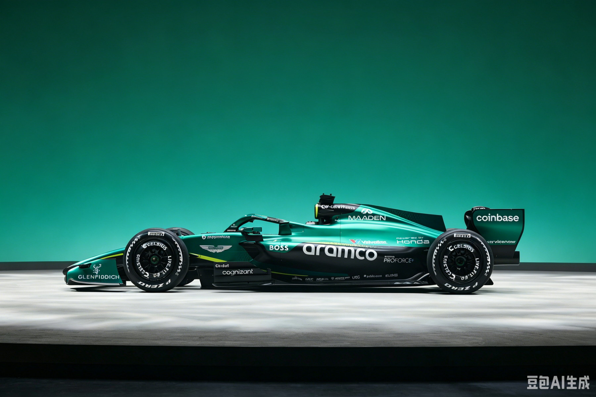

Aston Martin Aramco
AMR26
British racing green,
reimagined.
AMR26 是传奇空力大师 Adrian Newey 为阿斯顿·马丁设计的第一款 F1 赛车，搭载 Honda RA626H 动力单元——这是首款 Honda 动力的阿斯顿·马丁赛车。 还配备自 2004 年来首款 Silverstone 园区自研变速箱，被 Newey 定位为"可进化平台"。
动力单元与性能
引擎 EngineHonda RA626H — 1.6L V6 90° Turbo（首款 Honda 动力阿斯顿·马丁）
MGU-K 功率~350 kW（MGU-H 已取消）
能量回收 ERS制动回收每圈最高 8.5 MJ
最高转速 Max RPMICE 15,000 rpm
燃油 FuelAramco ProForce+ 100% 可持续燃料（FIA 合规）
润滑油 LubricantsValvoline SynPower
底盘与车身
底盘 Chassis碳纤维复合单体壳 + Zylon 防侵入侧板
最低车重 Min Weight~768–770 kg（含车手不含燃油 / 减重 ~28–30 kg）
轴距 / 车宽3,400 mm / 1,900 mm（最大）
重量分配前 44.5% – 46.0%
悬挂 Suspension前推杆 / 后推杆（上叉臂尾臂锚定尾翼支架——独特设计）
制动 BrakesBrembo 卡钳 / Carbon Industrie 碳碟 / 后制动线控
技术与运营
变速箱 Gearbox阿斯顿·马丁自研 8 速 + 1 倒挡（Silverstone 制造 / 2004 年来首次）
主动空力 Active Aero前后翼同步电动液压调节 / MOM 手动超控取代 DRS
侧箱设计极薄紧凑短侧箱 / 巨大下切 / 下咬式冷却进气口
车手 DriversFernando Alonso / Lance Stroll
管理技术合伙人Adrian Newey（领队兼技术负责人）
首测 Shakedown1 月 27 日 Barcelona / Alonso 61 圈